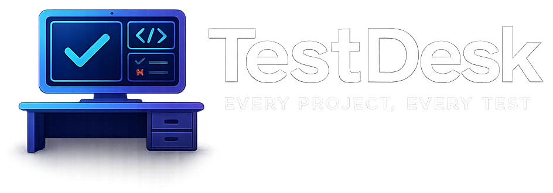
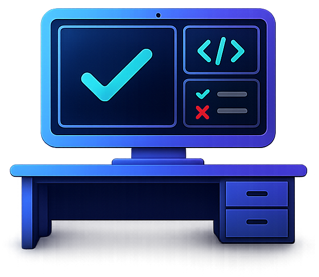

Starting TestDesk
0
tests identified
Loading project state, providers and recent test history.

TestDesk
Projects?
Idle
0:00
0 passed0 failed
TestDesk v1Projects
Connected workspaces
Projects
Activate an existing repository or add a new test workspace. Forgetting a project only removes TestDesk’s local record.
Known projects
Your detected test workspacesNew workspace
Add project
Choose a repository root and confirm detected providers.No project selected yet.
TestDesk v1Native test lifecycle manager
Status unavailable. Displayed project and test information may be out of date.
Providers0
Discovered Tests0
Queued0
Last Result—
0 filtered · 0 selected
TestDesk v1Settings
Application preferences
Settings
Configure TestDesk’s window, compact controller, current workspace and agent integrations.
General
Application and widget
Compact controller
Choose size, when it appears and how it stacks.Current workspace
Project-scoped settings and local data.- Project
- —
- Root
—- Configuration
—
MCP / agentic AI
Agent integrations
Detecting installed and available CLI workspaces…
Agent Skills & Prompt Rules
Install lean TestDesk skills & instructions for Claude, Antigravity, Cursor and custom agents.Provisions AGENTS.md, CLAUDE.md, .claude/skills, .cursor/rules and .gemini/skills for the active repository.
Detected workspaces
Manual MCP setup
Choose a target to copy the exact local configuration. Restart the agent after installing.
No MCP target selected.